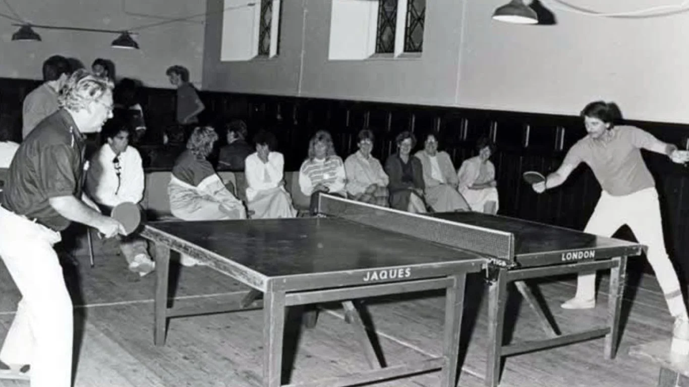

HISTÓRIA DO TÊNIS DE MESA

O Tênis de Mesa surgiu no final do século XIX, na Inglaterra, como uma adaptação do tênis tradicional para ambientes fechados. A prática começou entre membros da alta sociedade inglesa, que improvisavam partidas em mesas utilizando livros como rede e objetos pequenos como bola.
Com o passar do tempo, o esporte foi evoluindo e recebendo regras oficiais. As primeiras raquetes eram feitas de madeira e, posteriormente, ganharam revestimentos de borracha para melhorar o controle e a velocidade da bola. O nome “ping-pong” também ficou popular por causa do som produzido pela bola ao bater na mesa e nas raquetes.
No início do século XX, o esporte começou a se espalhar para outros países, tornando-se cada vez mais competitivo e organizado. Em 1926 foi criada a International Table Tennis Federation, responsável pela regulamentação mundial do esporte e pela realização de campeonatos internacionais.
Atualmente, o Tênis de Mesa é praticado por milhões de pessoas no mundo inteiro, tanto de forma recreativa quanto profissional. O esporte também faz parte dos Jogos Olímpicos desde 1988, destacando-se pela rapidez, estratégia e reflexos exigidos dos atletas.
PRINCIPAIS DESTAQUES DO TÊNIS DE MESA NO BRASIL
Hugo Calderano é um dos maiores nomes do tênis de mesa brasileiro. Conhecido por sua velocidade, técnica e habilidade, destacou-se em competições internacionais e alcançou o 2º lugar no ranking mundial da ITTF em 2026, a melhor posição já conquistada por um atleta das Américas.
Bruna Takahashi é uma das principais atletas do tênis de mesa feminino do Brasil. Desde jovem, vem se destacando em torneios nacionais e internacionais, tornando-se referência no esporte e alcançando posições históricas no ranking mundial da ITTF.